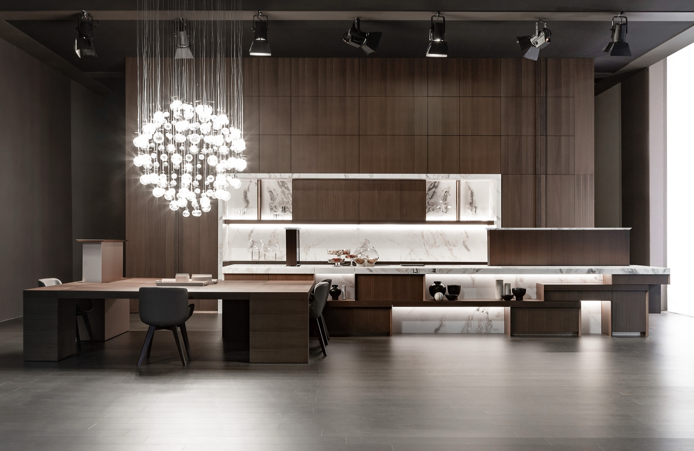
Кухня Avignon — изящество мрамора и смелые формы
Изящество смелых форм
Avignon
Утончённая интерпретация деконструированного стиля — эксклюзивная итальянская кухня премиум-класса, вдохновлённая «Авиньонскими девицами» Пикассо. Разрыв пространства как язык выразительности.
Avignon переосмысляет классическую кухонную архитектуру — смелее в пропорциях, свободнее в форме. Белый мрамор, тёплое дерево эвкалипта и матовая медь — три текстуры в диалоге друг с другом. Столешницы, фартуки и ручки толщиной 7,5 см придают коллекции скульптурный характер и весомость.
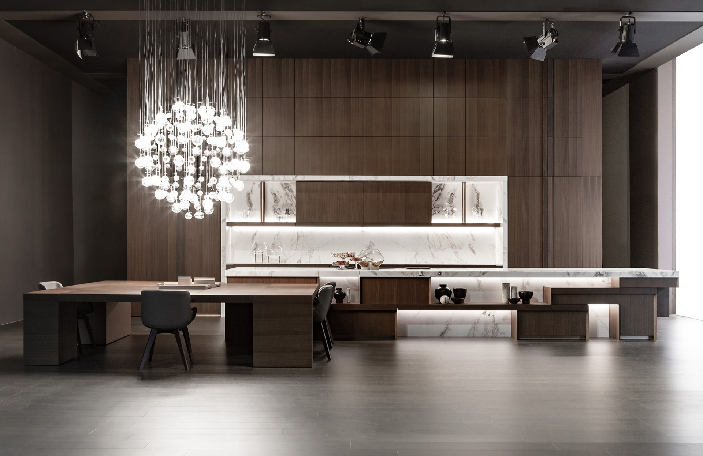
Пространство для творчества
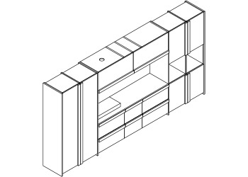
ЛИНЕЙНАЯ КОМПОЗИЦИЯ КОЛОНН, ОСНОВАНИЙ И НАВЕСНЫХ ШКАФОВ
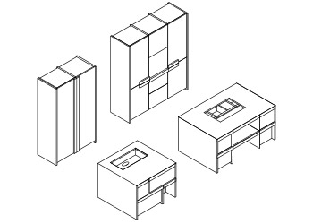
КОМПОЗИЦИЯ С ДВОЙНЫМИ ОСТРОВАМИ И КОЛОННАМИ
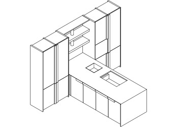
ЛИНЕЙНАЯ КОМПОЗИЦИЯ С ПОЛУОСТРОВОМ
Отделочные материалы
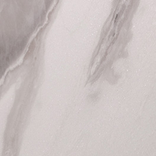
Мрамор Dover White
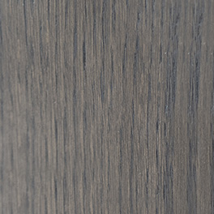
Эвкалипт фризе
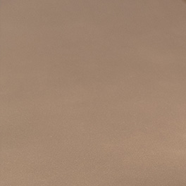
Лак матовая медь
Предлагаемые отделки
- Столешница / фасады острова / фартук
- Мрамор Dover White
- Фасады
- Эвкалипт фризе
- Ручки / цоколь
- Лак матовая медь (Rame spazzolato)
- Толщина
- Фирменная толщина 7,5 см в столешницах, фартуках и ручках
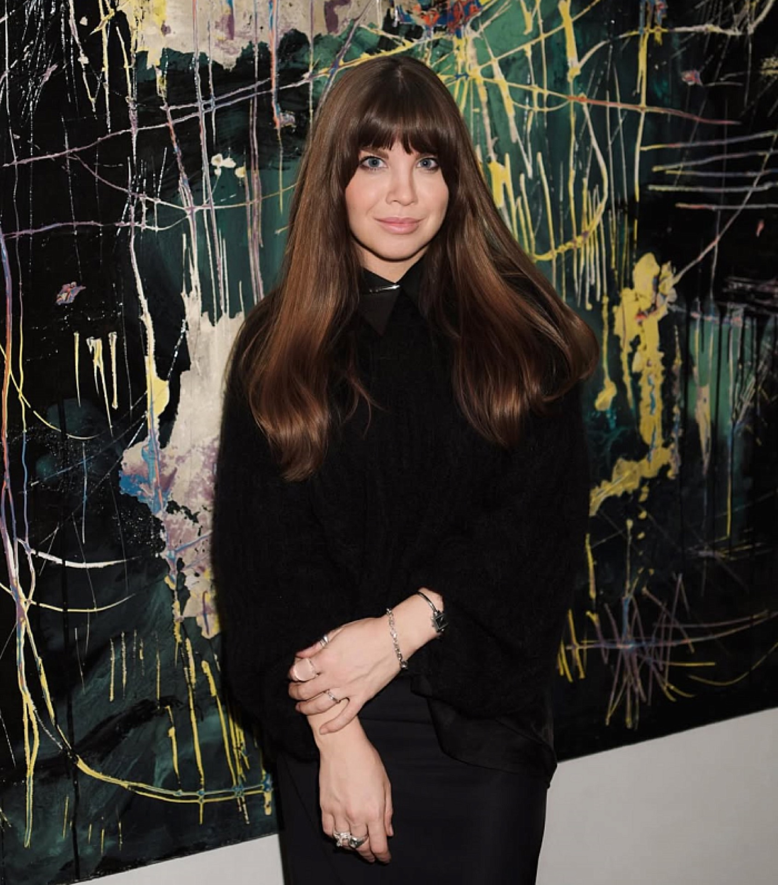
Стоимость коллекции Avignon — от 3 500 000 ₽
Avignon от TM Italia — эксклюзивная итальянская кухня ручной работы, созданная дизайнером Nicola Gallizia в духе деконструктивизма. Мрамор Dover White, эвкалипт фризе и матовая медь превращают каждый элемент в скульптурный объект, а пространство — в место для жизни и общения. Итоговая конфигурация подбирается индивидуально под ваш запрос и архитектуру пространства.
Наш менеджер Елена поможет найти баланс между эстетикой и функциональностью — и рассчитает стоимость под ваш запрос.
Умные технологии
Интеллектуальная многофункциональность
Невидимые технологии, интегрированные в каждый элемент кухни. Дистанционное управление, голосовое управление системами «умного дома» и скрытые функциональные зоны, которые трансформируют кухонное пространство.
От выдвижного монитора до скрытой кладовой — каждая деталь продумана для максимального комфорта и эстетической целостности.
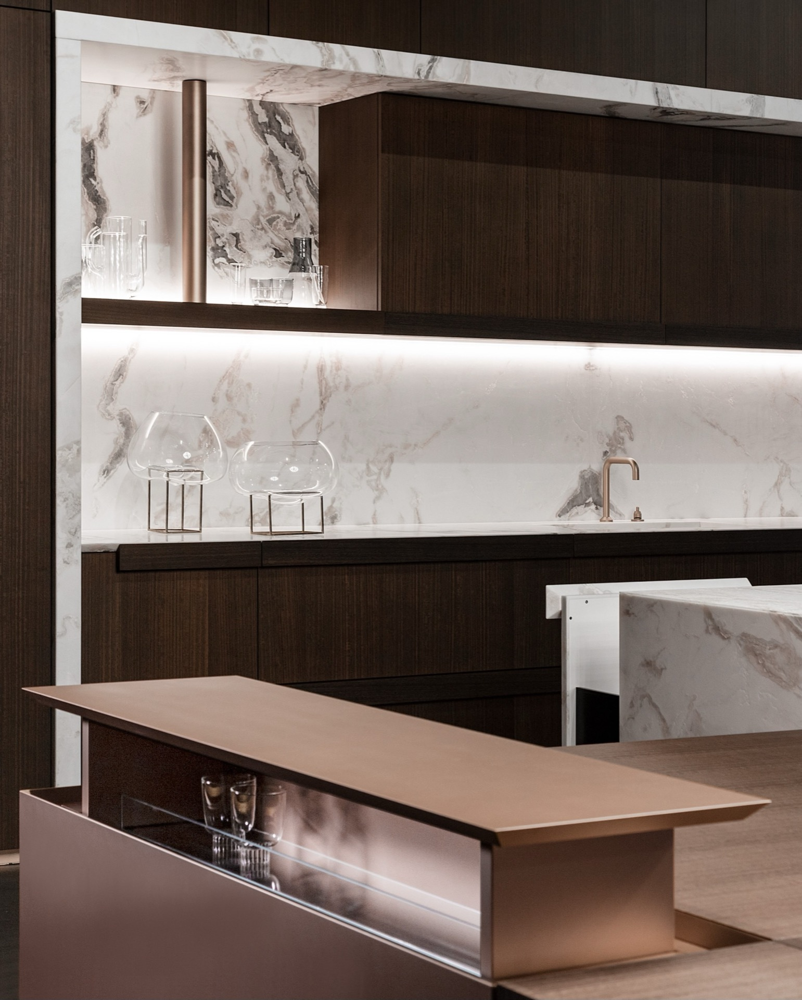
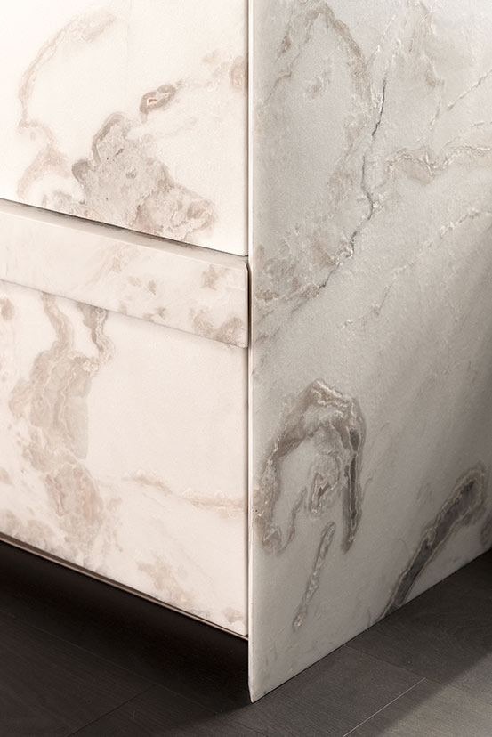
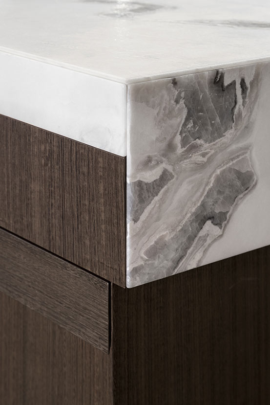
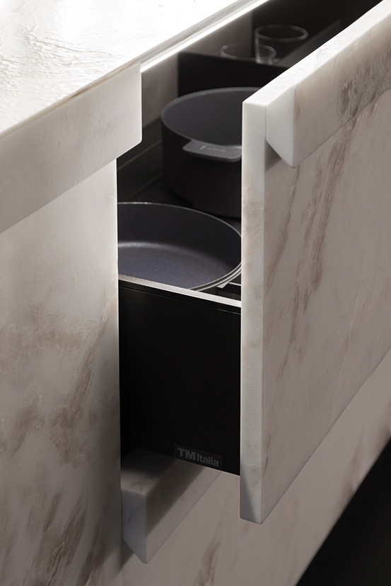
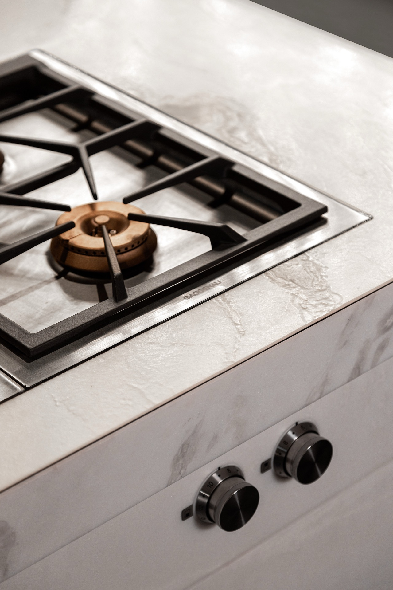
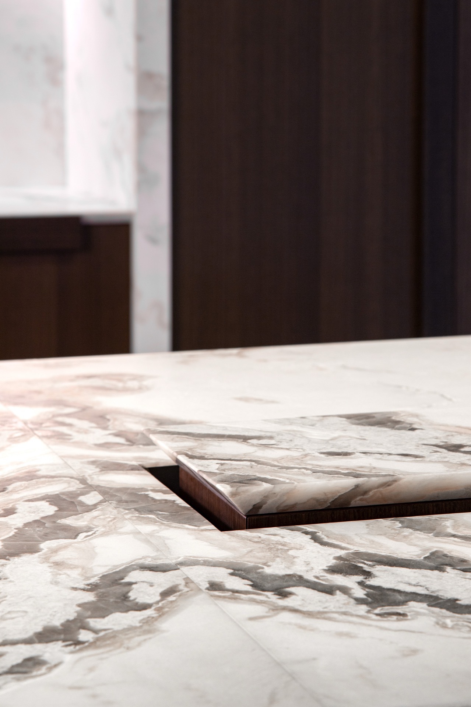
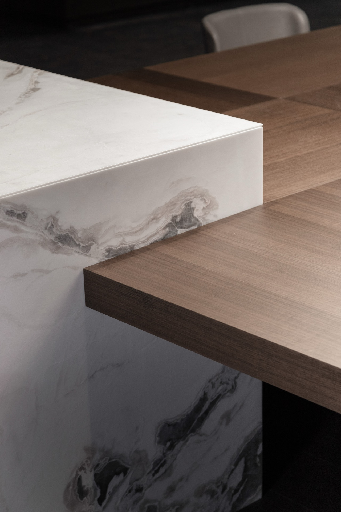
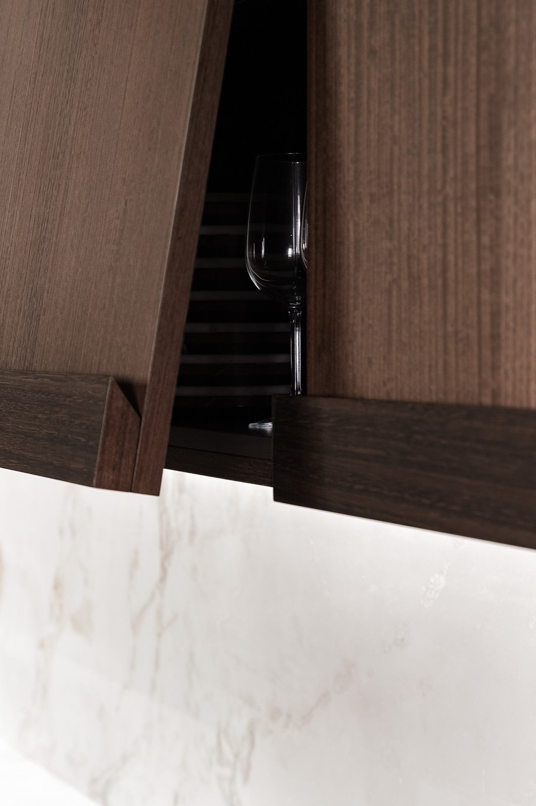
Nicola Gallizia
Никола Галлициа — миланский дизайнер, чья работа определяется тёплой, функциональной и минималистичной эстетикой. Его подход к проектированию сочетает геометрическую строгость форм с нейтральной палитрой материалов, создавая пространства, наполненные гармонией и спокойствием.
В коллекции Avignon Галлициа развивает свою философию деконструкции: привычные кухонные объёмы разбиваются на самостоятельные элементы, каждый из которых становится скульптурным объектом. Миланская школа дизайна проявляется в точности пропорций и внимании к тактильным качествам материалов.
nicolagallizia.it →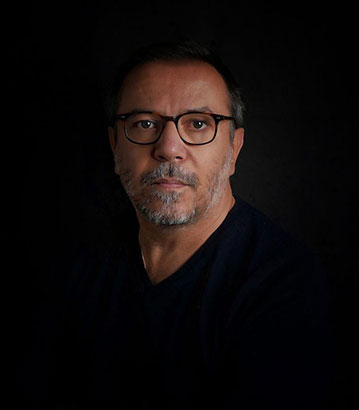
Обсудить проект
из коллекции Avignon
Персональная консультация по конфигурации и материалам.